# install.packages("haven")
#este comando nos permite instalar paquetes alojados en CRAN
library(haven) #Este comando nos permite ejecutar el paquetePráctico 2: Uso de bases de datos en R, estadística descriptiva y visualización
Trabajando con CASEN 2022
0. Objetivo del práctico
El objetivo de este práctico es aprender el uso de funciones y paquetes en R, con el fin de cargar bases de datos, realizar análisis descriptivos y representaciones gráficas básicas.
Para esto haremos uso de la encuesta CASEN (2024), la mayor encuesta de hogares realizada en Chile, a cargo del Ministerio de Desarrollo Social, de carácter transversal y multipropósito, es el principal instrumento de medición socioeconómica para el diseño y evaluación de la política social. Permite conocer periódicamente la situación socioeconómica de los hogares y de la población que reside en viviendas particulares, a través de preguntas referidas a composición familiar, educación, salud, vivienda, trabajo e ingresos, entre otros aspectos.
1. Paquetes y funciones en R
Cuando descargamos e instalamos R este contiene una cantidad limitada de funciones disponibles, las cuales podemos ampliar mediante la descarga de distintos paquetes creados por la comunidad de usuarios, los cuales nos permitirán, mediante nuevas funciones, ampliar las capacidades del programa, en términos de gestión de bases de datos, análisis estadísticos, visualización de datos, y muchas otras funciones.
En la siguiente práctica queremos usar la base de datos de CASEN, la cuál está disponible en formato .sav (SPPS) y .dta (STATA), formatos que no son soportados por la versión base de R. Para poder cargar la base de datos como un objeto en R usaremos el paquete haven, el cual incluye funciones para cargar datos a R en diversos formatos.
Una vez cargado el paquete debemos descargar la base de datos y ubicarla en nuestro computador para poder cargarla con la función read_spss(). Para esto debemos establecer un directorio de trabajo, es decir, la carpeta raíz a partir de la cual R buscará los archivos que queremos cargar en nuestro espacio de trabajo, y donde guardará los output de nuestros análisis.
#La sigueitne función nos permite dentificar el irectorio de trabajo actual
getwd()
#debemos fijar un directorio de trabajo a la carpeta en que tendremos nuestros archivos, por ejemplo:
setwd("C:/Users/Gabriel/Desktop/Directorio R")
# Nota: Debe usarse el simbolo "/" y NO "\"Una vez que hemos fijado nuestro directorio de trabajo podemos cargar nuestra base de datos y asignarla como objeto, para que se guarde en el ambiente y poder usarla posteriormente en nuestros análisis.
load("casen_2024.RData")
casen <- casen_20242. Gestión de datos
A continuación, revisaremos como realizar algunas cuestiones básicas de gestión de datos en R. Un aspecto relevante a tener un cuenta es que R, dado su carácter abierto, suele existir más de una solución para realizar cada tipo de análisis. En el caso de la gestión de datos, esto puede hacer a partir de las funciones base de R o a partir de funciones del paquete dplyr, el cual forma parte de tidyverse, el cuál consiste en un conjunto de paquetes para ciencia de datos desarrollados con una filosofía, gramática y estructura de datos en común.
En las funciones de dplyr el primer argumento siempre es un DataFrame, los argumentos subsiguientes describen las columnas a operar, usando los nombres de las variables (sin comillas) y el resultado es siempre un nuevo DataFrame.
Para seleccionar solo las variables que necesitamos de una base de datos podemos utilizar R base a partir de los nombres o índices de las variables (su posición dentro de la base de datos). En dplyr podemos usar la función select.
2.1 Seleccionar Variables
#Seleccionar variables
#R base
casen1<-casen[,c("folio","id_persona","area","sexo","edad","pobreza")] #según nombre de la variable
casen1<-casen[,1:2] #según posición de la variable
#Tidyverse
#install.packages("tidyverse")
library(tidyverse)
casen1<-select(casen, folio, orden = id_persona #podemos cambiar el nobmre a una variable al seleccionarla con al forma nombre_nuevo = nombre_original
, area, edad, sexo, pobreza) #dplyr2.2 Filtrar casos
Para filtrar casos de acuerdo a ciertas características podemos usar condiciones lógicas a partir de r base utilizando la estructura base[filas,columnas] para hacer un subset de la base de datos, o utilizar la función filter de dplyr.
#Filtrar casos
#R base
casen1a<-casen1[casen1$area == 1 & casen1$sexo == 1,] #seleccionar casos urbanos
#dplyr
casen1b<- filter(casen1, area == 1 & sexo == 1 ) #dplyrUso del pipeline
El “pipeline” o tubería en R, especialmente al trabajar con el paquete dplyr del tidyverse, es una herramienta poderosa que permite encadenar múltiples operaciones de forma clara y legible. En R, el pipeline se representa con el operador %>% (aunque con la versión 4.1.0 de R, el operador nativo |> también puede utilizarse para algunas operaciones). Este operador toma el resultado de la expresión de su izquierda y lo pasa como primer argumento a la función a su derecha.
A continuación podemos comparar un código en que no se usa un pipeline y uno que si. Aquí, cada paso del análisis se separa claramente con el operador %>%, lo que hace que el flujo de trabajo sea fácil de leer de arriba a abajo, casi como una serie de instrucciones.
casen3 <- filter(
select(casen, folio, id_persona,pobreza,sexo),
pobreza %in% 1:2 & sexo == 1)
casen3 <- casen %>%
select(folio, id_persona,pobreza,sexo) %>%
filter(pobreza %in% 1:2 & sexo == 1)2.3 Recodificar variables
Para crear nuevas variables podemos utilizar R base a través de condiciones lógicas, o integrar esto dentro de las funciones if_else y case_when. Podemos ver que ambos procedimientos producen el mismo resultado, pero en general la sintaxis de estos últimos resulta más simple y legible. De igual manera se puede integrar de mejor manera dentro de la función “mutate” de dplyr.
ifelse
La función ifelse(test, yes, no) es una función vectorizada que evalúa una condición (test) para cada elemento de un vector y retorna un valor correspondiente (yes) si la condición es verdadera, o un valor diferente (no) si es falsa. Es muy útil para recodificaciones simples o para asignar valores basados en una única condición binaria. Sin embargo, cuando las condiciones se vuelven más complejas o se necesitan múltiples niveles de evaluación, la sintaxis puede complicarse rápidamente.
case_when
La función case_when permite definir múltiples condiciones y resultados en una sola llamada. Cada condición se verifica en orden, y el primer resultado verdadero es el que se asigna. Esto la hace particularmente útil para recodificaciones más complejas con múltiples categorías o condiciones. Además, case_when mejora la legibilidad del código y es más fácil de mantener que múltiples llamadas anidadas a ifelse.
#Recodificar/crear varibles
#Rbase
casen$edadt[casen$edad < 16] = 1
casen$edadt[casen$edad >= 16 & casen$edad < 60] = 2
casen$edadt[casen$edad >= 60] = 3
#ifelse y case_when
casen <- casen %>%
mutate(pobrezad = ifelse(pobreza %in% 1:2, 1, 0),
edadt2 = case_when(
edad >= 0 & edad <= 15 ~ 1,
edad >= 16 & edad <= 59 ~ 2,
edad >= 60 & edad <= 120 ~ 3,
TRUE ~ NA_real_ # Esta línea es opcional, maneja valores fuera de las condiciones anteriores
))
table(casen$edadt == casen$edadt2)
TRUE
218367 2.4 Agrupar y Resumir Datos
En el análisis de datos, frecuentemente necesitamos agrupar observaciones según una o más variables y luego calcular estadísticas resumidas para cada grupo. dplyr ofrece dos funciones poderosas para esta tarea: group_by y summarize. A continuación, explicamos cómo utilizar estas funciones para manipular y analizar conjuntos de datos de manera eficiente.
group_by
La función group_by de dplyr se utiliza para dividir un conjunto de datos en grupos, basados en una o más variables. Una vez agrupados los datos, puedes aplicar funciones de resumen a cada grupo de manera independiente, lo cual es extremadamente útil para comparaciones y análisis estadísticos.
Por ejemplo si queremos obtener la tasa de pobreza por región en CASEN, primero debemos agrupar nuestra base por dicha variable.
summarize
Tras agrupar los datos con group_by, summarize se utiliza para calcular estadísticas resumidas para cada grupo. Puedes usar cualquier función de resumen en summarize, como mean, sum, min, max, y muchas otras.
casen %>%
group_by(region) %>%
summarize(pobreza = mean(pobrezad))También podemos usar group_by para crear nuevas variables a partir de ciertos grupos utilizando mutate. Por ejemplo, podemos crear el promedio de edad de cada hogar y guardarlo como una variable nueva.
casen %>%
group_by(folio) %>% #folio identifica cada hogar en CASEN
mutate(edad_media = mean(edad)) %>%
ungroup() %>%
select(folio, id_persona, edad, edad_media) %>%
head(20) #vemos los primeros 20 casos3. Estadística Descriptiva
Para obtener estadísticos descriptivos en R, tales como la media, la mediana o la desviación estándar debemos usar las funciones incluidas para esto en R. Para esto utilizaremos la variable “ytotcorh” que corresponde al ingresos total corregidos de los hogares.
#media
mean(casen$ytotcorh) #nos devuelve NA dado que hay casos perdidos[1] NAmean(casen$ytotcorh,na.rm=T) #debemos agregar un argumento indicando que no considere los casos perdidos[1] 1753336#mediana
median(casen$ytotcorh,na.rm=T) [1] 1344264#Varianza y desviación estandar
var(casen$ytotcorh,na.rm=T) [1] 2.629785e+12sd(casen$ytotcorh,na.rm=T) [1] 1621661#Cuantiles
quantile(casen$ytotcorh, probs = c(0.25,0.50,0.75,0.9),na.rm = TRUE) #percetniles 25% 50% 75% 90%
883281.5 1344264.0 2067500.0 3193321.0 #minimo
min(casen$ytotcorh,na.rm = TRUE) [1] 0#máximo
max(casen$ytotcorh,na.rm = TRUE)[1] 60600000#summary nos entrega un resumen de la variable
summary(casen$ytotcorh) Min. 1st Qu. Median Mean 3rd Qu. Max. NA's
0 883282 1344264 1753336 2067500 60600000 107 Del mismo modo podemos obtener tablas de frecuencia absoluta y relativa.
table(casen$sexo)
1 2
103616 114751 #Para usar las etiquetas de las variables cargadas en e formato spss podemos usar el comando as_factor()
table(as_factor(casen$sexo))
Hombre Mujer
103616 114751 #prop.table nos da una tabla de proporciones a partir de una tabla
prop.table(table(as_factor(casen$sexo)))
Hombre Mujer
0.4745039 0.5254961 #El comando table también nos permite obtener tablas cruzadas
table(as_factor(casen$sexo),as_factor(casen$pobreza))
Pobreza extrema Pobreza no extrema Fuera de la pobreza
Hombre 7588 11094 84927
Mujer 9937 14209 90505#si añadimos el argumento 1 nos dará porcentajes fila y 2 nos dará porcentajes columna
prop.table(table(as_factor(casen$sexo),as_factor(casen$pobreza)),1)
Pobreza extrema Pobreza no extrema Fuera de la pobreza
Hombre 0.07323688 0.10707564 0.81968748
Mujer 0.08667173 0.12393263 0.789395644. Visualización básica de datos
R entrega una serie de herramientas para la visualización de datos. En este caso revisaremos brevemente las herramientas básicas de visualización de datos que trae R base.
#Gráfico de barras
plot(as_factor(casen$pobreza), main="Situación de pobreza", xlab="Pobreza",ylab="Frequencias",
col=2)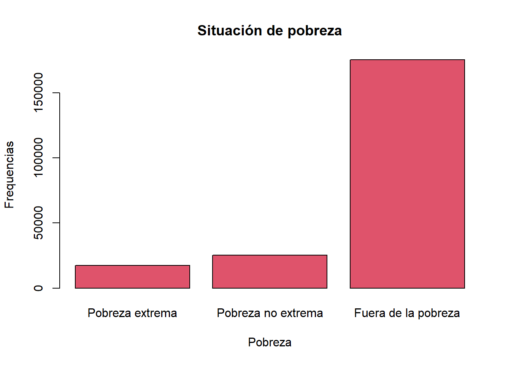
#Histogramas
hist(casen$edad,main="Edad de los encuestados", xlab="Años",ylab="Frequencia")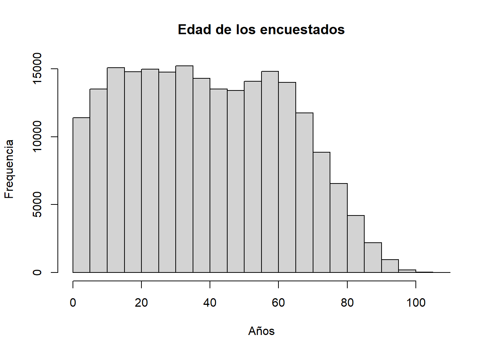
#boxplot
boxplot(casen$edad, main = "Gráfico de cajas edad",
outline = TRUE)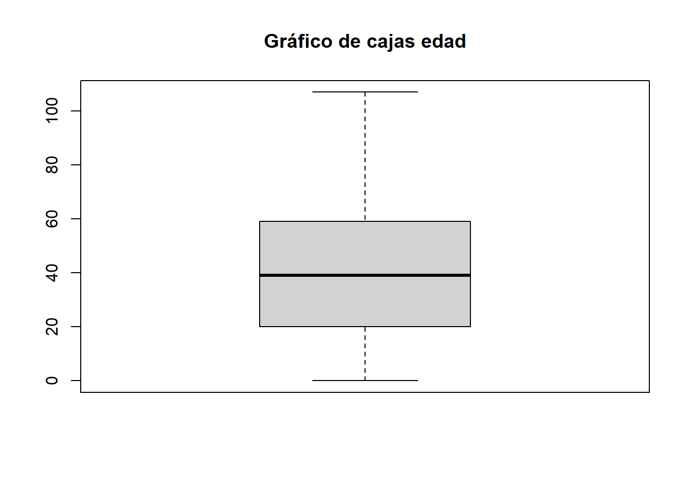
5. Visualización de datos con ggplot2
Una mejor herramienta para la visualización de datos en R es el paquete ggplot2. A continuación revisaremos paso a paso la estructura de la gramática de gráficos.
En primer lugar, debemos asegurarnos de tener instalado y cargado el paquete ggplot2. En este caso no es necesario ya que previamente cargamos el tidyverse, lo cual incluye ggplot2.
En primer lugar tenemos que seleccionar un conjunto de datos sobre el que trabajaremos. Podemos hacer esto de manera integrada con el flujo de trabajo del pipeline que vimos para dplyr.
#install.packages("ggplot2")
library(ggplot2)
casen %>%
ggplot() 
El resultado de entregar solo una base de datos a ggplot será un gráfico vació, sin información en sus ejes, ni representaciones gráficas de los datos. El siguiente paso es definir la estética o aesthetics, mediante la función aes(), en la cual indicaremos cuales son las variables que constituirán los ejes de nuestro gráfico. En este caso construiremos un gráfico con una sola variable, por lo que pondremos la edad en el eje x.
Cada capa adicional que vayamos agregando a nuestro gráfico en ggplot 2 debe agregarse mediante un “+”. No confundir con el trabajo con el pipeline.
casen %>%
ggplot() +
aes(x = edad)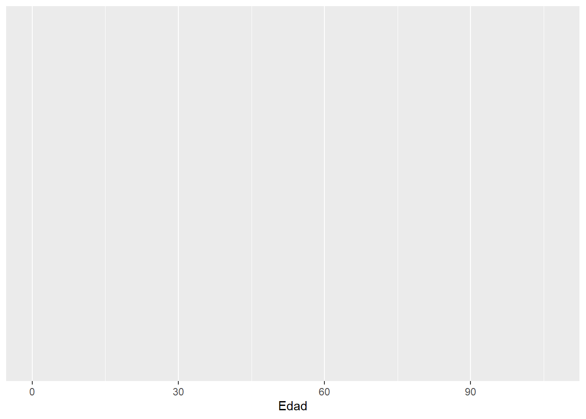
Por último, necesitamos decirle a ggplot como representar nuestros datos en el eje señalado mediante un geom, es decir, el objeto geométrico que se utilizará para representar los datos. Para esto hay múltiple funciones que empiezan con “geom_”, como geom_bar, geom_point o geom_line. En este caso queremos contruir un histograma así que usaremos geom_histogram.
casen %>%
ggplot() +
aes(x = edad) +
geom_histogram()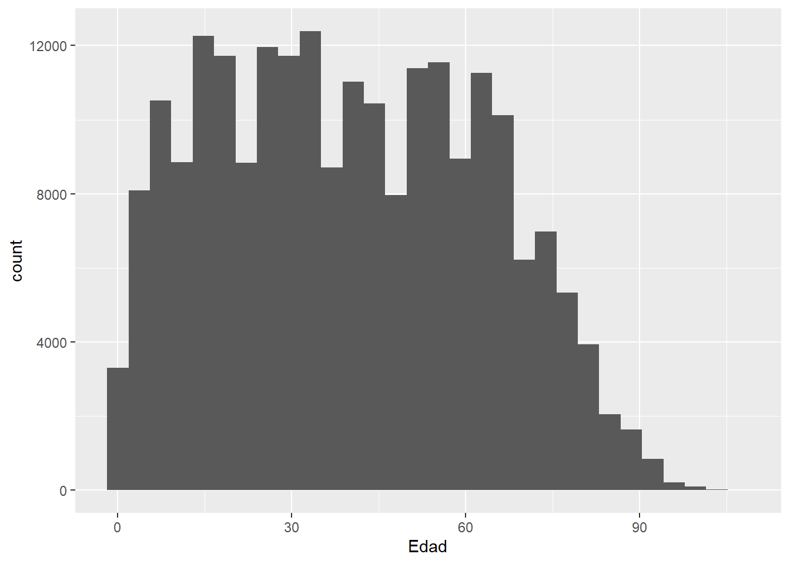
Ya tenemos una visualización básica. Ahora introduciremos algunos elementos adicionales para mejorar la apariencia de nuestro gráfico.
- labs(): Se añaden un título, un subtítulo y una nota al pie (caption) para proporcionar contexto y citar la fuente de los datos. Esto mejora la comprensión del gráfico por parte del espectador.
theme_minimal(): Se aplica un tema minimalista al gráfico para un aspecto limpio y moderno.
theme(): Se personalizan varios elementos del gráfico, incluyendo el estilo del título, subtítulo, nota al pie, y el tamaño del texto de los ejes y las etiquetas de los ejes. Esto mejora la legibilidad y la presentación visual del gráfico.
labs(): Se añaden un título, un subtítulo y una nota al pie (caption) para proporcionar contexto y citar la fuente de los datos. Esto mejora la comprensión del gráfico por parte del espectador.
theme_minimal(): Se aplica un tema minimalista al gráfico para un aspecto limpio y moderno.
theme(): Se personalizan varios elementos del gráfico, incluyendo el estilo del título, subtítulo, nota al pie, y el tamaño del texto de los ejes y las etiquetas de los ejes. Esto mejora la legibilidad y la presentación visual del gráfico.
casen %>%
ggplot() +
aes(x = edad) +
geom_histogram(fill = "#40E0D0", color = "white", bins = 30) + # Ajusta la cantidad de barras con bins
labs(title = "Distribución de Edades en la Encuesta Casen 2024",
subtitle = "Histograma de edades de los encuestados",
x = "Edad",
y = "Frecuencia",
caption = "Fuente: Encuesta Casen 2024") +
theme_minimal() +
theme(plot.title = element_text(face = "bold", size = 20), # Ajusta el estilo del título
plot.subtitle = element_text(face = "italic", size = 16), # Estilo del subtítulo
plot.caption = element_text(face = "italic", size = 10), # Estilo de la fuente
axis.title = element_text(size = 14), # Tamaño del texto de los ejes
axis.text = element_text(size = 12)) #Tamaño del texto de las etiquetas de los ejes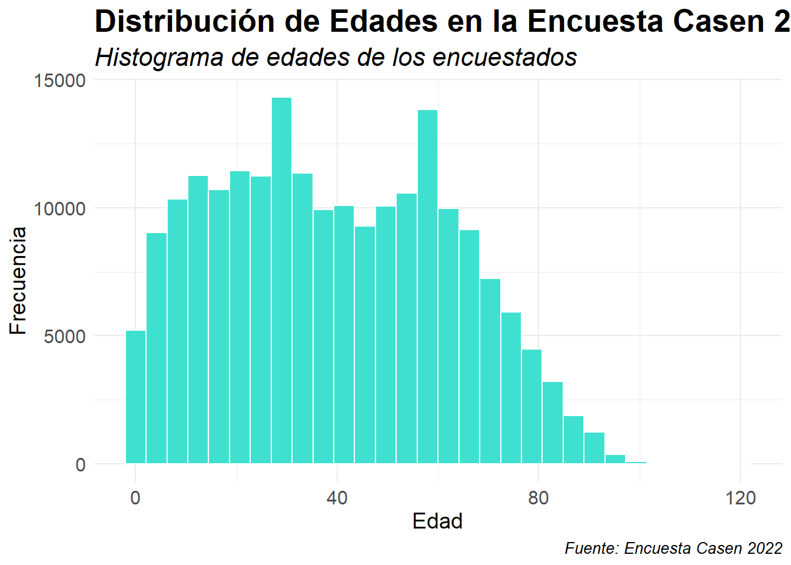
Ahora veamos el ejemplo de un gráfico bivariado. para esto debemos fijar una varaible en cada eje para las aesthetics. En este caso veremos la relación entre años de escolaridad y ingresos del trabajo. Para esto usaremos un scatterplot, construido a partir de geom_point(). Filtraremos la base de datos a la Región de Valparaíso para reducir la cantidad de datos a graficar, y limitaremos los datos hasta 5 millones de peso para evitar valores muy extremos que dificulten la visualización.
casen %>%
filter(region == 5, ytrabajocor <= 5000000) %>%
ggplot() +
aes(x = esc, y = ytrabajocor) +
geom_point()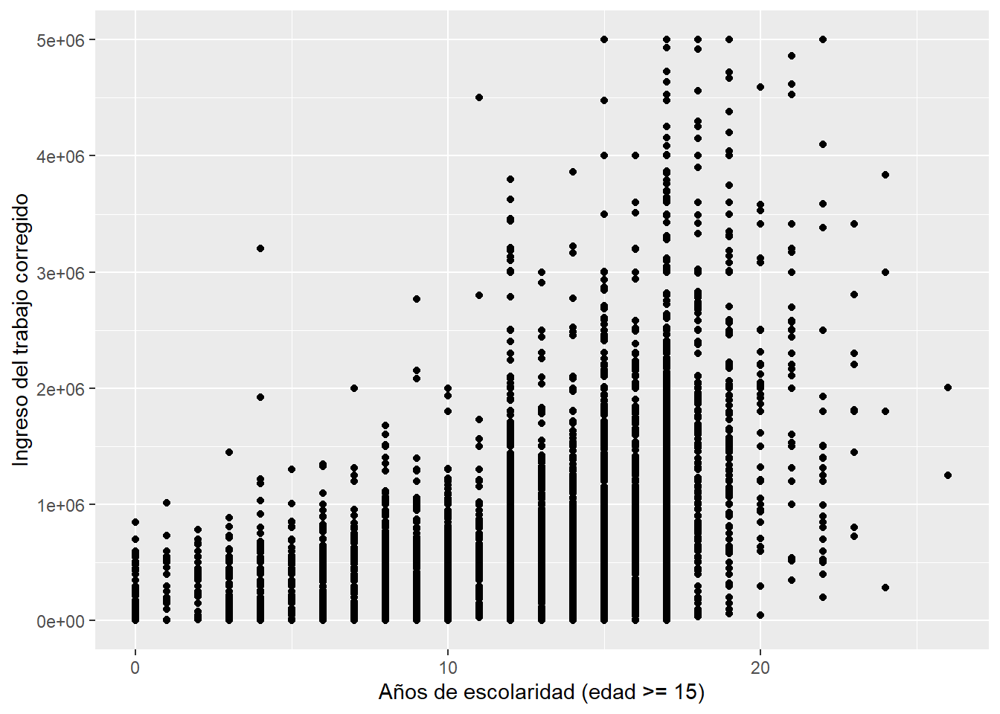
Como vemos el gráfico tiene la escolaridad en el eje x, y los ingresos en el eje y. sin embargo, dada la gran cantidad de puntos, la relación entre ambas variables no resulta tan clara. Para mejorar lo anterior haremos dos cambios, aplicaremos una transparencia a cada punto apra poder observar la densidad de los puntos en cada parte del gráfico, y añadiremos una linea de tendencia lineal con la función geom_smooth().
casen %>%
filter(region == 5, ytrabajocor <= 5000000) %>%
ggplot() +
aes(x = esc, y = ytrabajocor) +
geom_point(alpha = 0.1) +
geom_smooth(method = "lm", color = "red") +
theme_bw()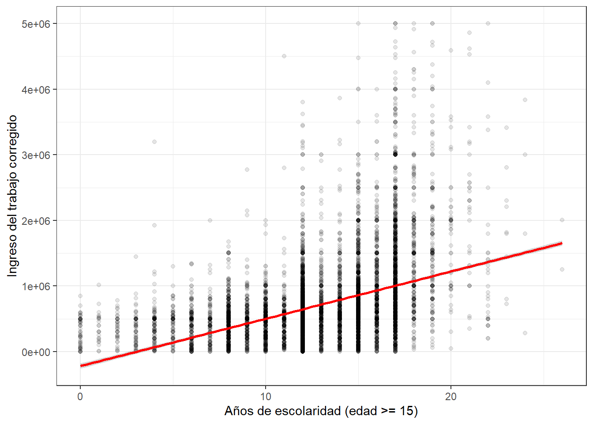
Ahora podemos observar de mejor manera que hay una relación positiva entre ambas variables, es decir que, a más escolaridad, en promedio los ingresos del trabajo son más altos.
casen %>%
filter(region == 5, ytrabajocor <= 5000000) %>%
ggplot(aes(x = esc, y = ytrabajocor)) +
geom_point(alpha = 0.1) + # Aumentar la transparencia para mejorar la visualización de la densidad
geom_smooth(method = "lm", color = "red", se = FALSE) + # Añadir una línea de tendencia sin la banda de confianza para claridad
scale_x_continuous(name = "Años de Escolaridad") + # Renombrar eje X
scale_y_continuous(name = "Ingresos por Trabajo (CLP)", labels = scales::comma) + # Renombrar eje Y y formatear como números
labs(title = "Relación entre Escolaridad e Ingresos por Trabajo",
subtitle = "Región de Valparaíso, Encuesta Casen",
caption = "Fuente: Encuesta Casen 2024") +
theme_bw() + # Usar un tema de fondo blanco y negro para claridad
theme(axis.text.x = element_text(angle = 45, hjust = 1)) # Rotar las etiquetas del eje X para mejorar la legibilidad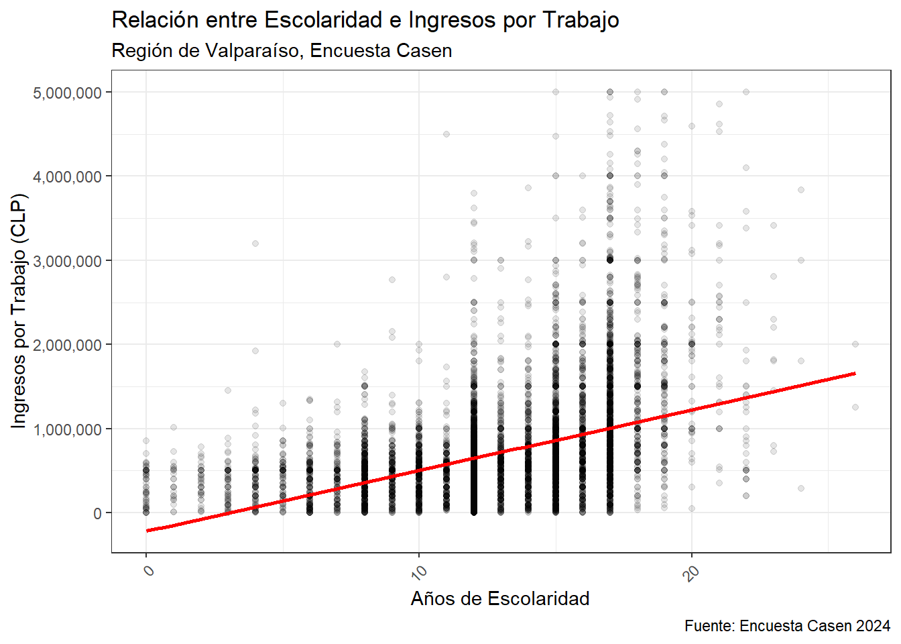
Por último agregamos las etiquetas del gráfico y otros elementos estéticos para mejorar su presentación.
Ahora veremos como hacer gráficos de barras para variables categóricas a partir de la variable sexo. Para esto usaremos geom_bar().
casen %>%
ggplot(aes(x = as_factor(sexo))) +
geom_bar(width = 0.4, fill=rgb(0.1,1,0.5,0.7)) +
scale_x_discrete("Sexo") +
scale_y_continuous("Frecuencia") +
labs(title = "Frecuencia relativa de sexo en Casen 2024",
caption = "Fuente: Encuesta Casen 2024") +
theme_bw()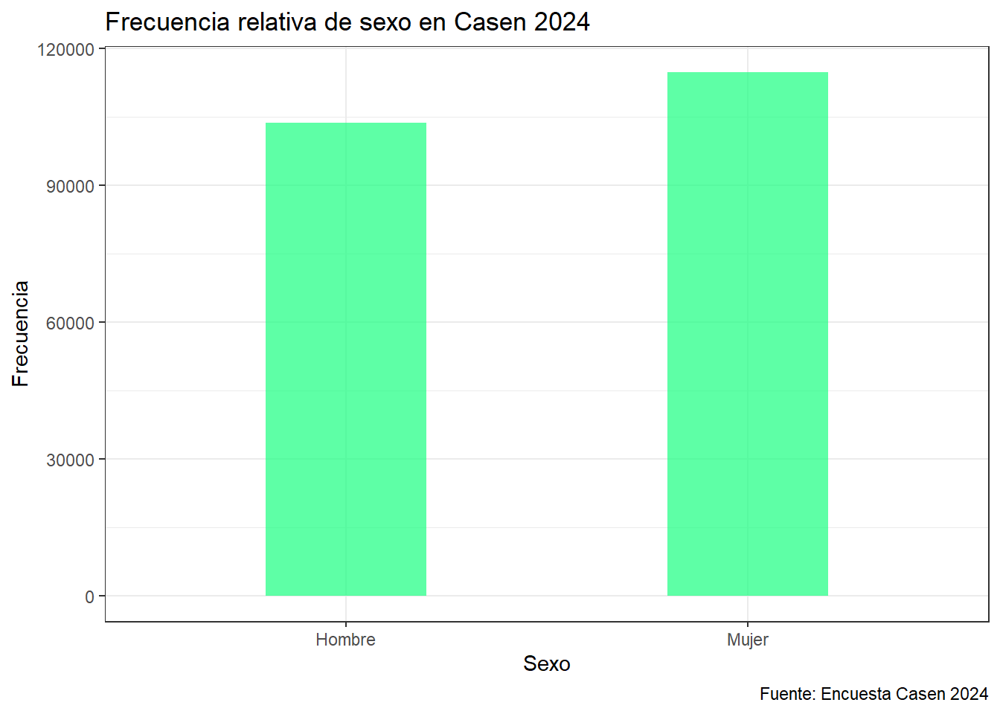
Para cambiar a frecuencias relativas, se modifica la definición de la estética y dentro de geom_bar() para calcular el porcentaje que cada barra representa del total. Esto se hace dividiendo el conteo de cada grupo (..count..) por la suma de todos los conteos (sum(..count..)), lo convierte las frecuencias absolutas en relativas:
casen %>%
ggplot(aes(x = as_factor(sexo))) +
geom_bar(width = 0.4, fill= rgb(0.1,0.3,0.5,0.7), aes(y = (..count..)/sum(..count..))) +
scale_x_discrete("Sexo") +
scale_y_continuous("Porcentaje",labels=scales::percent)+
labs(title = "Frecuencia absoluta de sexo en Casen 2024",
caption = "Fuente: Encuesta Casen 2024") +
theme_bw()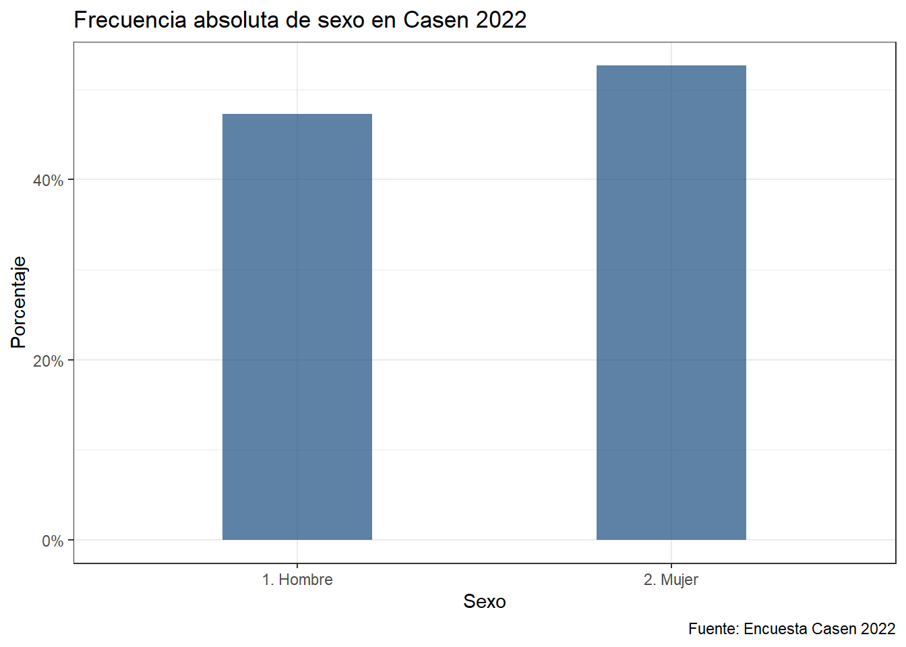
A continuación haremos un gráfico de linea, que exprese la proporción de pobres según edad. Para esto tendremos que modificar los datos y agruparlos por edad previamente a construir el gráfico. Preparamos los datos con las siguientes operaciones: - mutate(pobreza1 = ifelse(pobreza %in% 1:2, 1, 0)): Crea una nueva columna “pobreza1” donde los individuos considerados pobres (con valores de “pobreza” de 1 o 2) se marcan con un 1, y los no pobres (valor de “pobreza” 3) con un 0. - filter(edad < 90): Filtra para incluir solo a individuos con edad menor a 90 años. - group_by(edad): Agrupa los datos por edad. - summarize(pob = mean(pobreza1, na.rm = TRUE) * 100): Calcula el porcentaje promedio de individuos pobres por edad, multiplicando por 100 para obtener un porcentaje.
Luego a partir de esta base de datos contruimos el gráfico, ocupando dos geom, geom_point() y geom_line(), para dibujar una línea y puntos en cada edad, para visualizar la tendencia de la pobreza con la edad.
casen_pob <- casen %>%
mutate(pobreza1 = ifelse(pobreza %in% 1:2, 1, 0)) %>%
filter(edad < 90) %>%
group_by(edad) %>%
summarize(pob = mean(pobreza1, na.rm = TRUE) * 100)
head(casen_pob)casen_pob %>%
ggplot(aes(x = edad, y = pob)) +
geom_line(color = "#40E0D0") +
ylim(0, 35) +
geom_point(shape = 21, fill = "#40E0D0", size = 1) +
ylab("% Pobreza") +
xlab("Edad") +
labs(title = "Porcentaje de pobreza según edad",
caption = "Fuente: Encuesta Casen 2024") +
theme_bw()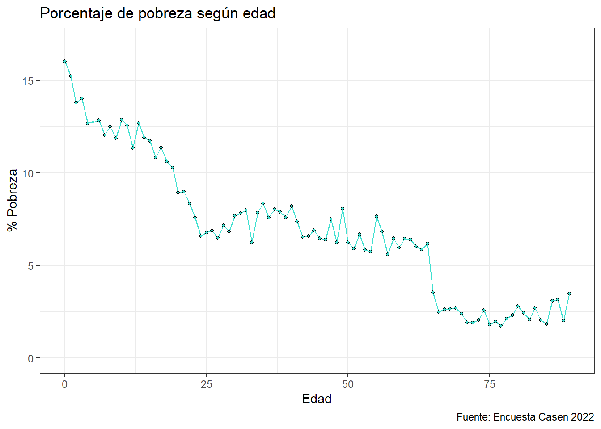
Por útlimo veremos una posibilidad muy útil que ofrece ggplot que es segemtnar le gráfico a partir de una variable adicional. facet_wrap es una función de ggplot2 que permite dividir un gráfico en múltiples paneles basados en los niveles de una variable, organizando los paneles en una matriz que, por defecto, está orientada por filas. Esto facilita la comparación directa de subconjuntos de datos dentro de la misma área de visualización, manteniendo las mismas escalas y ejes en todos los paneles.
Para esto al calcular el porcentaje de pobreza para cada grupo de edad segmentaremos adicionalmente por área urbana y rural. Luego usaremos esta variable para segmentar el gráfico en facet_wrap.
casen_pob_a <- casen %>%
mutate(pobreza1 = ifelse(pobreza %in% 1:2, 1, 0)) %>%
filter(edad < 90) %>%
group_by(edad, area) %>%
summarize(pob = mean(pobreza1, na.rm = TRUE) * 100)
head(casen_pob_a)casen_pob_a %>%
ggplot(aes(x = edad, y = pob)) +
geom_line(color = "#40E0D0") +
ylim(0, 45) +
geom_point(shape = 21, fill = "#40E0D0", size = 1) +
ylab("% Pobreza") +
xlab("Edad") +
labs(title = "Porcentaje de pobreza según edad por zona",
caption = "Fuente: Encuesta Casen 2024") +
theme_bw() +
facet_wrap(as_factor(casen_pob_a$area))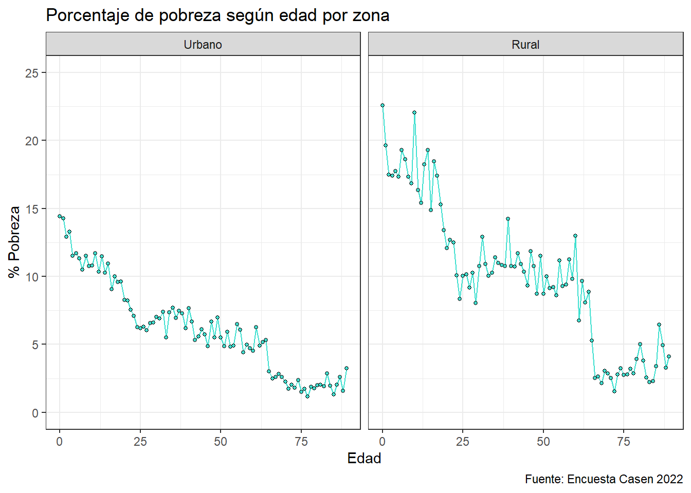
Para ver material adicional pueden revisar la siguiente Introducción al uso del paquete ggplot2. Para una revisión más profunda pueden revisar los capítulos 3 y 28 del libro R para ciencia de datos